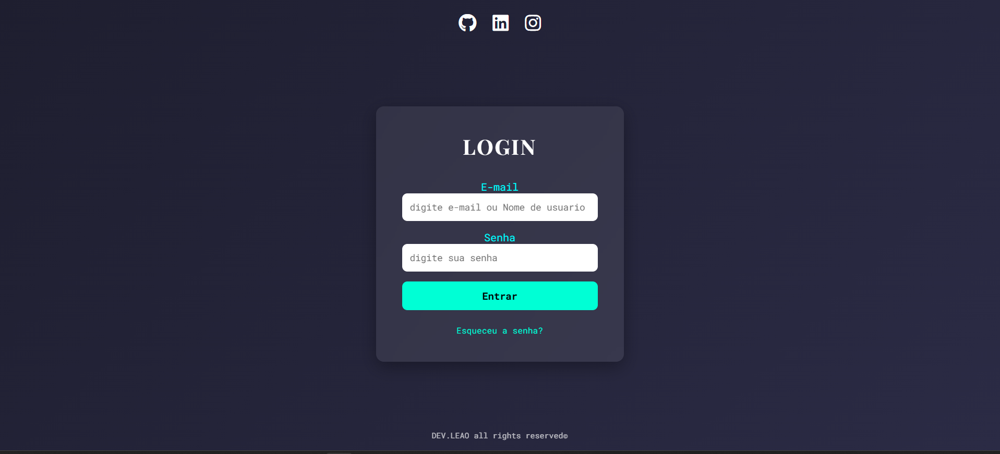
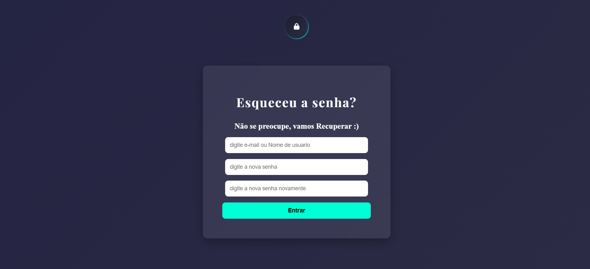

Interface de Login
Confira um dos meus projetos mais recentes.

Projeto Interface de Login
Sistema de autenticação com validações em tempo real
Interface moderna de login desenvolvida com foco em usabilidade e experiência do usuário. Possui validação de campos, feedback visual para erros e interações dinâmicas com JavaScript, garantindo maior segurança e clareza no processo de autenticação.
Tecnologias: HTML, CSS, JavaScript

Recuperação de Senha
Fluxo de redefinição de acesso do usuário
Funcionalidade complementar ao sistema de login que permite ao usuário recuperar o acesso à conta. Inclui validação de dados e interface intuitiva para envio de informações, simulando um fluxo real de recuperação de senha presente em sistemas profissionais.
Tecnologias: HTML, CSS, JavaScript